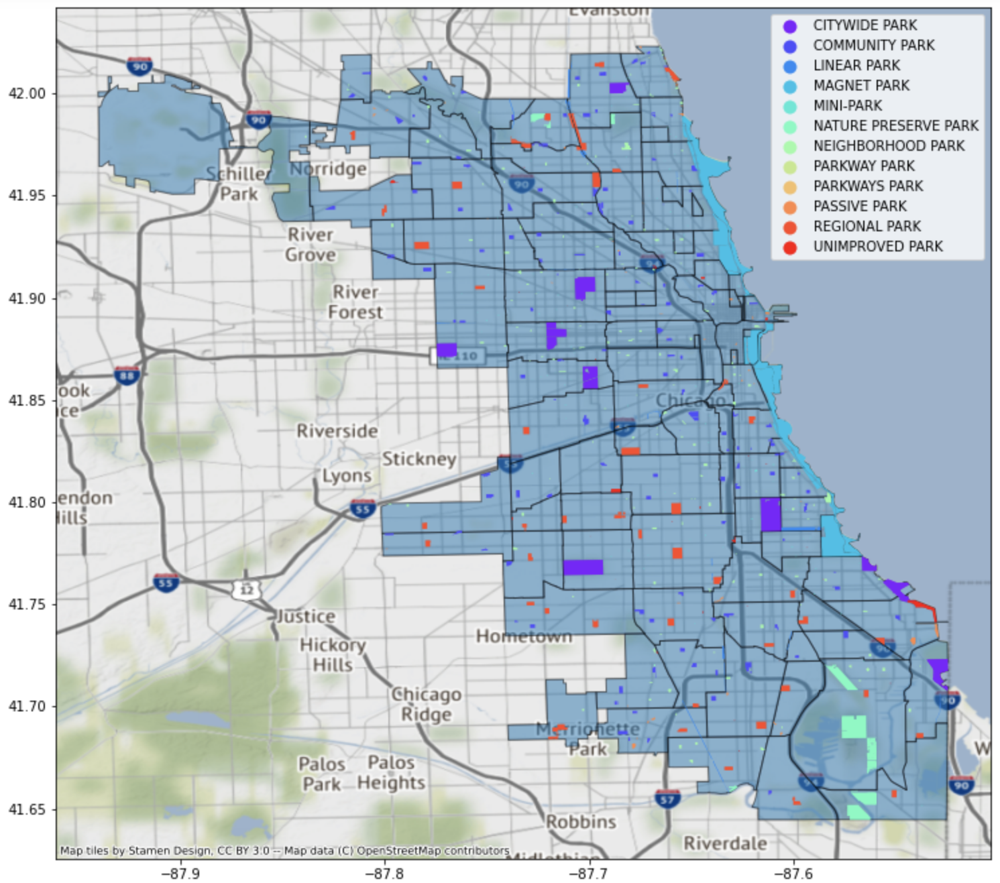
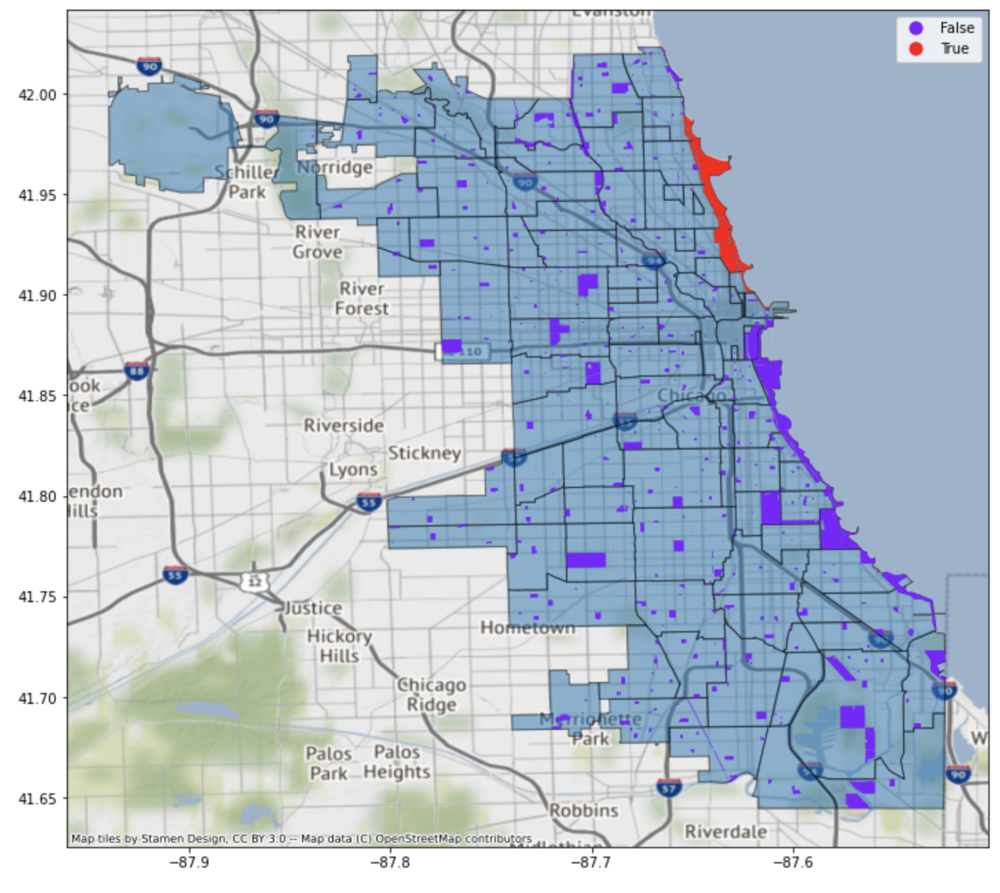
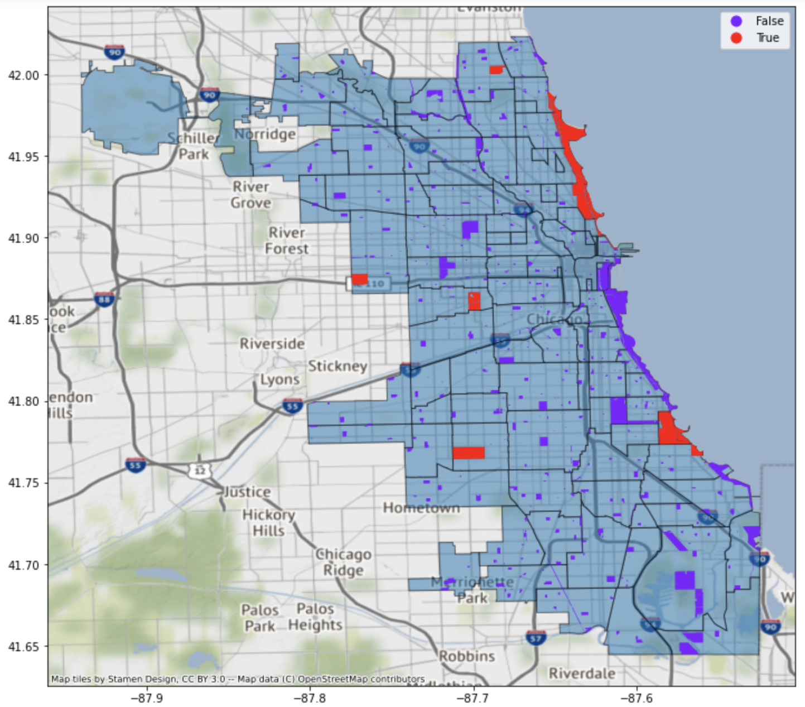

I am using Data Visualization to help neighborhood public in Chicago with locating any park with various facilities to choose from. Chicago is one of the largest cities in the US for its dashing architecture and beautiful skyline which is filled with skyscrapers such as Willis Tower. The city is also known for its parks where people can ice skate like in Lincoln park or play golf, basketball, tennis and other sports activities. People can also conduct various events in these parks like a yoga event, cultural event and Recreation programs. These parks are located all over Chicago and have a class type ranging from community to nature preserve parks. The below visualization is a map of Chicago neighborhoods layered with map of the parks that can be found in those neighborhoods. I have used different colors to differentiate between each park’s class type.
The above dashboard has the spread-out of parks in the city of Chicago. What more, we can also see if we have certain facilities available in these parks with a True for yes and a False for no. In the below visual, for each park we can see if it has a wheelchair access presented as purple for false and red for true. If you have noticed, most of the parks do not have the wheelchair access facility, this shows that we need to increase awareness of the need for more accessibility for handicapped people so that they don’t hold back from enjoying Chicago’s beautiful parks.
We can now see if any of these parks have a zoo. The below image shows that there seems to be one type of park that has a zoo which is a Magnet park and most likely in Lincoln park which is also near a beach. If anyone wants to have a family outing then they can definitely try going here and enjoying the beach as well.
I am going to show on more facility which these parks might have and that is a golf course. We can see that a few of the parks like Lincoln, Marquette and Columbus have a golf course. All the people who are interested in golf can go to these parks in Chicago.
Code
References
Chicago Park District (2019). Parks – Chicago park district park boundaries(current). City of Chicago Data Portal
Choose Chicago (2018). Boundaries – Neighborhoods. City of Chicago Data Portal. City of Chicago Data Portal
hhttps://data.cityofchicago.org/Facilities-Geographic-Boundaries/Boundaries-Neighborhoods/bbvz-uum9